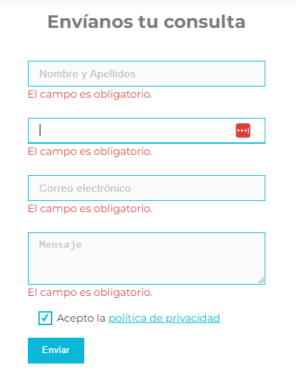
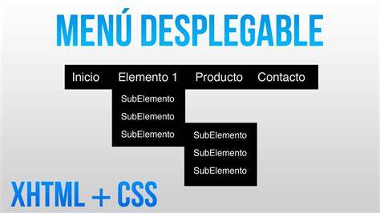

1. Visibilidad del estado del sistema
El sistema debe mantener informados a los usuarios sobre lo que está ocurriendo, mediante retroalimentación adecuada y en tiempo razonable.
Trabajo de Investigación 2
La usabilidad web es la facilidad con la que los usuarios pueden utilizar y navegar un sitio web para cumplir sus objetivos de manera eficiente, efectiva y satisfactoria
Un sitio con buena usabilidad permite que los usuarios encuentren la información que buscan, realicen acciones sin dificultades y tengan una experiencia positiva
El sistema debe mantener informados a los usuarios sobre lo que está ocurriendo, mediante retroalimentación adecuada y en tiempo razonable.
El sistema debe hablar el lenguaje del usuario, con palabras, frases y conceptos familiares, en lugar de términos técnicos
Los usuarios a menudo eligen funciones por error y necesitan una "salida de emergencia" claramente marcada para salir sin problemas
Los usuarios no deben preguntarse si diferentes palabras, situaciones o acciones significan lo mismo. Se deben respetar las convenciones del sistema

Es mejor diseñar el sistema para evitar que ocurran problemas que mostrar mensajes de error
Minimizar la carga de memoria del usuario mostrando opciones, menús y ayudas visibles en vez de hacer que memorice información
El sistema debe atender tanto a usuarios novatos como avanzados, permitiendo acelerar la interacción con atajos o personalización
Podrian usarse iconos que todas las personas entiendan
Evitar información irrelevante o rara vez necesaria que compite con la información importante
Los mensajes de error deben expresarse en lenguaje claro, indicando el problema y sugiriendo soluciones
Aunque es mejor que el sistema sea usable sin documentación, puede ser necesario proveer ayuda y documentación fácilmente accesible